list.files(path="/fh/fast/leek_j/user/kisaac/ocs_spatial/GSE307404/", pattern = "cell_boundaries.csv.gz$") %>% stringr::str_replace("-cell_boundaries.csv.gz", "") %>% strsplit("_") %>% do.call(rbind.data.frame, .) %>% `colnames<-`(c("X1", "X2"))Biomedical Open Case Studies: Assessing Quality, Normalization, and Expression Patterns in Spatially-Informed Gene Expression Data
![Quilt plot showing the expression of two genes for a control neurotypical sample on the top and a Schizophrenia diagnosis sample on the bottom. Points in each quilt plot represent a single cell or spot within its spatial context. Expression levels are displayed with a color gradient where light purple corresponds to low expression, blue corresponds to medium expression, and green corresponds to high expression. The first gene on the left is CX3CR1 a downregulated gene and we see lower expression levels on the bottom quilt plot because it is paler overall. The gene on the right is FKBP5 an upregulated gene and we see higher levels of expression on the bottom quilt plot because it has more blues and greens.](img/quilt_plots_ntc81_scz83_cx3cr1.png)
Disclaimer
The purpose of the Open Case Studies project is to demonstrate the use of various data science methods, tools, and software in the context of messy, real-world data. A given case study does not cover all aspects of the research process, is not claiming to be the most appropriate way to analyze a given data set, and should not be used in the context of making policy or clinical decisions without external consultation from scientific experts or medical care professionals. In addition, due to size constraints, datasets used within a case study may be a subset of the original/full dataset.
License information
This work is licensed under the Creative Commons Attribution-NonCommercial 4.0 (CC BY-NC 4.0) United States License.
Funding information
This work is funded through the National Institutes of Health, specifically the National Institute of General Medical Sciences: Grant Number 1R25GM160622.
To cite this case study, please use:
Isaac, Kathryn J and Wright, Carrie. (2026). https://github.com/opencasestudies/ocs-bio-spatial-transcriptomics/. Exploring quality, normalization, and patterns in spatially-informed gene expression data (Version v1.0.0).
GitHub repository
To access the GitHub repository for this case study see here: https://github.com/opencasestudies/ocs-bio-spatial-transcriptomics/
Keywords
- Keyword 1
- Keyword 2
- Keyword 3
- …Keyword n
Prerequisites
Prerequisites
Add a list of prerequisites here.
Motivation
This case study explores {}…
Definition
Provide the definition here
Images are very helpful within this section….

Main Question
Our main question(s)
- How does the choice of technology/platform for generating spatially-resolved gene expression data impact the data that I will have to work with?
- What about my data should I consider during quality control in order to set filtering criteria?
- How will my choice of normalization methods impact my results?
- How do gene expression patterns compare for specific genes in dorsal prefrontal cortex tissue samples from cases with diagnosed schizophrenia to those from neurotypical cases?
Learning Objectives
In this case study, we will explore {}.
This case study will particularly focus on {}.
The skills, methods, and concepts that students will be familiar with by the end of this case study are:
Data Science/Bioinformatics Learning Objectives:
- {FILL IN}
- {FILL IN}
- {FILL IN}
Biological/Topical Learning Objectives:
- {FILL IN}
- {FILL IN}
- {FILL IN}
Context
{FILL IN}
What are the data?
Xenium spatial transcriptomics data represents mRNA counts for panel target transcripts mapped to spatial locations in the tissue. As such there are 3 main data types or files that we will be working with.
- Tissue/sample Metadata
- Spatial Coordinates
- mRNA Counts
Metadata
For the data in Kwon et al. (2026), postmortem tissue samples from 24 donors were used to generate Xenium data:
- 12 Neurotypical donors [NTC]
- 5 males
- 7 females
- 12 donors diagnosed with Schizophrenia [SCZ]
- 6 males
- 6 females
There are two metadata files (that we’ll need to combine to relate GEO IDs to sample IDs)
spatial_samples.csv– this file is from the supplementary information and provides metadata such as Sex, Diagnosis, age, and if the sample has corresponding Visium or Xenium data.- Comma separated values with a header
- first column is
Brain Number (ID)(e.g., BR####) - second column is
Race - third column is
Sex - fourth is
Age - fifth is
RIN- RNA Integrity Number (add info in context section about this) - sixth is
PMI- Postmortem Interval (add info in context section about this) - seventh is
PrimaryDx(e.g., Control or Schizophrenia) - eighth is
Visium-SPG(does this sample have corresponding Visium data YES/NO) - ninth is
Xenium(does this sample have corresponding Xenium data YES/NO)
geo_to_spatial_samples.csv– this file I made by wrangling the file names to create a dataframe (and saved that to a.csv)- Comma separates values, no header
- first column is the GEO number for each sample
- second column is the Brain Number (ID) (e.g., BR####) matching those in the
spatial_samples.csvfile
Code for creating geo_to_spatial_samples.csv:
Spatial Coordinates
We have {Sample}-cell_boundaries.csv.gz files for the spatial coordinates rather than classical files with spatial coordinates (….add explanation of what these classical files/other options are). Specifically these files have many rows per cell describing each vertex that is part of a cell polygon. We can find the centroid of each cell by considering all of these polygon coordinates together.
For each row:
- cell_id
- vertex_x
- vertex_y
Note that the Cell IDs in these files correspond to the $barcodes discussed in the RNA counts data
RNA counts
The data for the RNA counts is stored in .h5 files. Rather than storing large matrices, the data is more efficiently stored in named/nested lists that can be used to reconstruct the matrix. Of important note, only non-zero counts are stored as well as the indices where those counts are in the matrix (e.g., for which genes and spot IDs they correspond with). Information here: https://www.10xgenomics.com/support/software/space-ranger/latest/advanced/hdf5-feature-barcode-matrix-format
Can use rhdf5::h5dump(file_name, load = FALSE) to get a look at the names or headers of the data.
$matrixis the top name$barcodes– cell IDs$data– the non-zero counts$features– has subparts relating to the rows/genes$_all_tag_keys– “genome” for our data$feature_type– specifies Gene Expression vs negative control probe, negative control codeword, unassigned codeword$genome– unknown for our data$id– gene ID or control/probe ID for elements of$data$name– gene name or control/probe name for elements of$data
$indices– zero based row index for non-zero values found in$data(iequivalent forMatrix::sparseMatrix)$indptr– zero based index for$dataand$indiceswhere columns start (pequivalent ofMatrix::sparseMatrix)$shape– dimensions of the data (number of genes or features X number of cells).- Note that the number of cells >>>>> number of genes (Xenium panel with limited number of genes)
- Note that the product of the dimensions will be greater than the length of
$datasince this is representing non-zero counts only and therefore is a sparse representation
What spatialGE is looking for
spatialGE will accept file directories, but it will also accept lists of dataframes for each sample. Because we have to wrangle our generic format input data, we’ll be providing named lists of dataframes for both the spatial coordinates (spotcoords) and the feature counts (rnacounts).
For spatial coordinates, the dataframes should have
- 3 columns
- Spot or Cell IDs
- X value (center)
- Y value (center)
- One row per each unique spot or cell ID
For the feature counts, the dataframes should have
- n features/rows
- (m+1) spots or cells/columns
- The plus 1 is because the first column will list the feature/gene names
For samples metadata (if passing a dataframe with additional metadata beyond sample names), the sample names used in the named lists for spotcoords and rnacounts should be the first column of the samples dataframe.
Limitations
There are some important considerations regarding this data analysis to keep in mind:
- {FILL IN}
- {FILL IN}
Ethical Considerations
There are some important ethical considerations when working with data relating to this case study’s main questions.
- {FILL IN}
- {FILL IN}
Packages and Setup
We will begin by loading the packages that we will need:
library(here)
library(tidyverse)
library(readr)
library(dplyr)
library(sf)
library(arrow)
library(R.utils)
library(rhdf5)
library(Matrix)
library(spatialGE)
library(ggpubr)
library(patchwork)
library(colorblindr)| Package | Use |
|---|---|
| here | Constructs paths within project |
| tidyverse | Data wrangling |
| readr | Reading in data |
| dplyr | Data wrangling |
| sf | Enables storing and working with spatial data |
| rhdf5 | Reading and working with H5 files |
| Matrix | Working with sparse and dense matrices |
| spatialGE | Package for QC, normalization, filtering, visualization, and analysis of spatially-resolved gene expression data |
| ggpubr | Further functions to customize and prepare ggplot2 plots for publication |
The first time we use a function, we will use the :: to indicate which package we are using. Unless we have overlapping function names, this is not necessary, but we will include it here to be informative about where the functions we will use come from.
Data Import
Since we are working with Xenium spatial transcriptomics data for multiple samples, we need to provide spatialGE with 3 types of data.
- Sample Metadata (primarily the sample IDs)
- Spatial Coordinates
- The mRNA counts
spatialGE provides the user some flexibility in how they import their data. Users can either provide file paths or they can provide named lists with each list containing data frames for
Provide instructions on how to get the spatial_samples.csv and geo_to_spatial_samples.csv files.
3 random SCZ samples and 3 random NTC samples
- We set the random seed
- We read in metadata files, joining them so that we can relate the sample information with the
PrimaryDxcolumn - We select 3 random NTC samples
- We select 3 random SCZ samples
- We make a vector of those 6 sample IDs
set.seed(567)
spatial_samples <- readr::read_csv(here::here("data/raw/spatial_samples.csv"))
geo_to_spatial <- read_csv(here("data/raw/geo_to_spatial_samples.csv"), col_names = FALSE)
spatial_sample_info <- spatial_samples %>%
dplyr::filter(Xenium == "YES") %>%
full_join(geo_to_spatial,
by = c("Brain Number (ID)" = "X2")) %>%
select(c("Brain Number (ID)", "Sex", "PrimaryDx", X1))
#3 NTC samples
ntc_samples <- unname(sample(unlist(spatial_sample_info[which(spatial_sample_info$PrimaryDx == "Control"), "X1"]), 3))
#3 SCZ samples
scz_samples <- unname(sample(unlist(spatial_sample_info[which(spatial_sample_info$PrimaryDx == "Schizophrenia"), "X1"]), 3))
samples <- c(scz_samples, ntc_samples)
samples[1] "GSM9223484" "GSM9223483" "GSM9223479" "GSM9223485" "GSM9223477"
[6] "GSM9223481"Reproducibility considerations
Any steps in an analysis that rely on randomness or stochasticity are not reproducible later or by others unless a random seed is set prior to the running those steps (and used every time before running those steps).
What are the 3 samples subset from the larger cohort for each condition?
- NTC Samples:
- 2 females
- 1 male
- SCZ Samples:
- all 3 females
spatial_sample_info[spatial_sample_info$X1 %in% samples,]# A tibble: 6 × 4
`Brain Number (ID)` Sex PrimaryDx X1
<chr> <chr> <chr> <chr>
1 Br5314 F Control GSM9223477
2 Br8433 M Control GSM9223481
3 Br5746 F Schizophrenia GSM9223479
4 Br5973 F Schizophrenia GSM9223484
5 Br1139 F Schizophrenia GSM9223483
6 Br8667 F Control GSM9223485Fetch GEO data for these samples
This lapply will loop through the samples vector and fetch the following files for each sample:
-cell_boundaries.csv.gzfor computing spatial coordinatesparquet.gzfor spatial coordinates-cell_feature_matrix.h5for RNA expression
lapply(1:length(samples),
function(x)
GEOquery::getGEOSuppFiles(GEO = samples[x],
filter_regex = "\\-cell_boundaries|\\-cell_feature_matrix|\\parquet",
baseDir = here("data/raw")
)
)Prepare the data for import into spatialGE (with STlist)
Sample metadata
- Rename the column with a space in its name to have no spaces
- Filter to include only the subset 6 samples
- Combine the Brain Number ID with the Primary Dx to create an ID that provides more information about each sample
- Relocate this new ID to the first column
- Arrange so the rows are in the same order as the
samplesvector.
lookup <- c(sampleID = "X1", brainNumID = "Brain Number (ID)")
samples_metadata <- spatial_sample_info %>%
dplyr::rename(., all_of(lookup)) %>%
filter(sampleID %in% samples) %>%
mutate(PrimaryDx = case_when(PrimaryDx == "Control" ~ "CTRL",
PrimaryDx == "Schizophrenia" ~ "SCZ")
) %>%
tidyr::unite("DxID",
brainNumID, PrimaryDx,
sep = "",
remove = FALSE) %>%
relocate(DxID) %>%
arrange(match(sampleID, samples))
samples_metadata # A tibble: 6 × 5
DxID brainNumID Sex PrimaryDx sampleID
<chr> <chr> <chr> <chr> <chr>
1 Br5973SCZ Br5973 F SCZ GSM9223484
2 Br1139SCZ Br1139 F SCZ GSM9223483
3 Br5746SCZ Br5746 F SCZ GSM9223479
4 Br8667CTRL Br8667 F CTRL GSM9223485
5 Br5314CTRL Br5314 F CTRL GSM9223477
6 Br8433CTRL Br8433 M CTRL GSM9223481Let’s get rid of the other data frames so we don’t accidentally use them going forward and to reclaim some memory.
rm(spatial_samples, geo_to_spatial, spatial_sample_info, ntc_samples, scz_samples, samples, lookup)Spatial Coordinates
decompress_read_parquet <- function(samples_metadata, sample){
#Build file paths
gz_file <- here(paste0("data/raw/",
sample,
"/",
sample,
"_",
samples_metadata[which(samples_metadata$sampleID == sample), "brainNumID"],
"-cells.parquet.gz"))
decompressed_file <- str_replace(gz_file, ".gz", "")
#Decompress
R.utils::gunzip(gz_file, destname = decompressed_file, remove = FALSE, skip = TRUE)
#Read in
df <- arrow::read_parquet(decompressed_file)
#Remove the decompressed file because we no longer need it
file.remove(decompressed_file)
#Select columns of interest
centroids <- df %>%
select(cell_id, x_centroid, y_centroid)
#reclaim some R resources
rm(df, gz_file, decompressed_file)
gc()
#Return
return(centroids)
}
spatial_coords <- lapply(1:nrow(samples_metadata), function(x) decompress_read_parquet(samples_metadata, samples_metadata$sampleID[x]))
names(spatial_coords) <- samples_metadata$DxIDWhat if you don’t have the canonical parquet files?
- We make a list that we can store a dataframe in for each sample
- We loop through all 6 of the samples …. for each sample ….
- We read in the corresponding cell boundaries file
- We group that data by the
cell_idcolumn since multiple rows are present for each cell ID - (with
slice) We have to append the first row for each cell ID also to the bottom in order to “close the polygon” by going back to the starting vertex - We grab coordinates for each cell’s polygon and store all coordinates in geometry column
- (with
st_as_sf()) we convert the data frame into a simple feature object so that we can work within a spatial context (to compute the cell’s centroid) for non-spatial data structures st_centroidcomputes the centroid location for each cell using thegeometrycolumn from step 6- We grab x and y coordinates for the centroids, storing them in their own columns
- We store the Cell IDs and centroid coordinates as a dataframe for that sample
testsample <- samples_metadata$sampleID[1]
df_test_sample <- read_csv(here(paste0("data/raw/",
testsample,
"/",
testsample,
"_",
samples_metadata[which(samples_metadata$sampleID == testsample), "brainNumID"],
"-cell_boundaries.csv.gz")))Rows: 1116374 Columns: 4
── Column specification ────────────────────────────────────────────────────────
Delimiter: ","
chr (1): cell_id
dbl (3): vertex_x, vertex_y, label_id
ℹ Use `spec()` to retrieve the full column specification for this data.
ℹ Specify the column types or set `show_col_types = FALSE` to quiet this message.centroids <- df_test_sample %>%
group_by(cell_id) %>%
slice(1:n(), 1) %>%
summarize(geometry = sf::st_sfc(st_polygon(list(cbind(vertex_x, vertex_y)))), .groups = "drop") %>%
st_as_sf() %>%
mutate(centroid = st_centroid(geometry)) %>% #compute centroid location for each cell
mutate(cx = st_coordinates(centroid)[,1],
cy = st_coordinates(centroid)[,2]) %>%
st_drop_geometry() %>% #so that we can grab just the cell IDs and centroid x,y values
select(cell_id, cx, cy)This method is accurate if compared to the parquet files.
right_join(spatial_coords[[unlist(samples_metadata[which(samples_metadata$sampleID == testsample), "DxID"])]],
centroids,
by = "cell_id") %>%
rename(x_dataset_parquet = x_centroid,
y_dataset_parquet = y_centroid,
x_dataset_compute = cx,
y_dataset_compute = cy) %>%
pivot_longer(cols = - cell_id,
names_to = c("variable", "dataset"),
names_pattern = "(x|y)_(.*)") %>%
pivot_wider(names_from = dataset,
values_from = value) %>%
ggplot(aes(x = dataset_parquet,
y = dataset_compute)) +
geom_point(alpha = 0.2) +
facet_wrap(~variable) +
ggpubr::stat_regline_equation(aes(label = paste(..eq.label.., ..rr.label.., sep = "*`,`~")),
label.x = 3,
label.y = 7500)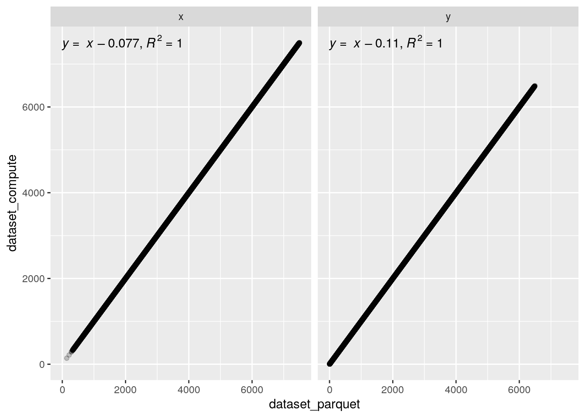
RNA counts
Note, will show in a click to expand section that rhdf5::h5dump can be used to look at the headers of the data, especially because we have to provide a “name” in the reading function and knowing that name requires knowing the headers
- We create a function to use for all 6 of the samples …. for each sample ….
- We read in the corresponding cell feature matrix file
- We build a sparse matrix, using the elements of the h5 file that correspond to each argument (as explained in the data description section above)
- We expand it to be a dense matrix that can be turned into a dataframe
- We set the row names to be the feature names from the h5 file
- We set the column names to be the cell IDs from the h5 file
- We also move the rownames to the first column and name it “genes” because
spatialGElooks for gene names in the first column, not as rownames, making sure they are unique.. - Finally we store this matrix in our named list for that sample
Turn this into an lapply statement instead of a for loop, utilizing a function for the main steps.
read_rna <- function(samples_metadata, sample){
h5file <- here(paste0("data/raw/",
sample,
"/",
sample,
"_",
samples_metadata[which(samples_metadata$sampleID == sample), "brainNumID"],
"-cell_feature_matrix.h5"))
rna_h5data <- rhdf5::h5read(h5file, name = "matrix")
rna_mat <- Matrix::sparseMatrix(i = rna_h5data$indices,
p = rna_h5data$indptr,
x = as.integer(rna_h5data$data),
dims = rna_h5data$shape,
index1 = FALSE) %>%
as.matrix() %>%
as.data.frame() %>%
`rownames<-`(rna_h5data$features$name) %>%
`colnames<-`(rna_h5data$barcodes) %>%
rownames_to_column("genes")
rm(rna_h5data, h5file)
gc()
return(rna_mat)
}
rnacounts_input <- lapply(1:nrow(samples_metadata), function(x) read_rna(samples_metadata, samples_metadata$sampleID[x]))
names(rnacounts_input) <- samples_metadata$DxIDPrepare a spatialGE project with STlist
scz_spatial <- spatialGE::STlist(rnacounts = rnacounts_input,
spotcoords = spatial_coords,
samples = samples_metadata
)Found list of dataframes.
Matching gene expression and coordinate data...
Converting counts to sparse matrices
Completed STlist!rm(rnacounts_input, spatial_coords, centroids, df_test_sample, testsample)
gc() used (Mb) gc trigger (Mb) max used (Mb)
Ncells 3672868 196.2 7498430 400.5 7498430 400.5
Vcells 58470601 446.1 301594268 2301.0 376308100 2871.1Then we’ll save the data so people can pick up at the next step after a break if they’d like. In testing the data, I’ve saved an input list as an .rds file before I’ve input it into STlist with no problem. Just want to make sure that the STlist object is being saved in an appropriate way that won’t cause issues.
saveRDS(scz_spatial, here("data/imported/scz_spatial.rds"))Data Exploration
Add instructions for loading the data…
If you skipped the data import section click here.
Add instructions for loading the data…
spatialGE::summarize_STlist(scz_spatial) %>% print(width = Inf)# A tibble: 6 × 9
sample_name spotscells genes min_counts_per_spotcell mean_counts_per_spotcell
<chr> <int> <int> <dbl> <dbl>
1 Br1139SCZ 59962 541 2 750.
2 Br5314CTRL 48542 541 0 680.
3 Br5746SCZ 45675 541 0 615.
4 Br5973SCZ 44655 541 0 619.
5 Br8433CTRL 61932 541 0 860.
6 Br8667CTRL 68976 541 0 939.
max_counts_per_spotcell min_genes_per_spotcell mean_genes_per_spotcell
<dbl> <int> <dbl>
1 4327 2 86.0
2 3365 0 97.5
3 2912 0 92.4
4 3048 0 94.3
5 4241 0 108.
6 4024 0 110.
max_genes_per_spotcell
<int>
1 211
2 219
3 194
4 204
5 219
6 218This is a 6 X 9 dataframe that provides
sample_name: GEO IDs we provided in sample metadataspotscells: how many spots or cells that sample hasgenes: how many genes that sample hasmin_counts_per_spotcell: minimum number of counts per spot or cell for that samplemean_counts_per_spotcell: average number of counts per spot or cell for that samplemax_counts_per_spotcell: maximum number of counts per spot or cell for that samplemin_genes_per_spotcell: minimum number of genes (with non-zero counts?) per spot or cell for that samplemean_genes_per_spotcell: average number of genes (with non-zero counts?) per spot or cell for that samplemax_genes_per_spotcell: maximum number of genes (with non-zero counts?) per spot or cell for that sample
Violin plot of counts per spot/cell for each sample
spatialGE::distribution_plots(scz_spatial, plot_type='violin', plot_meta='total_counts')$total_counts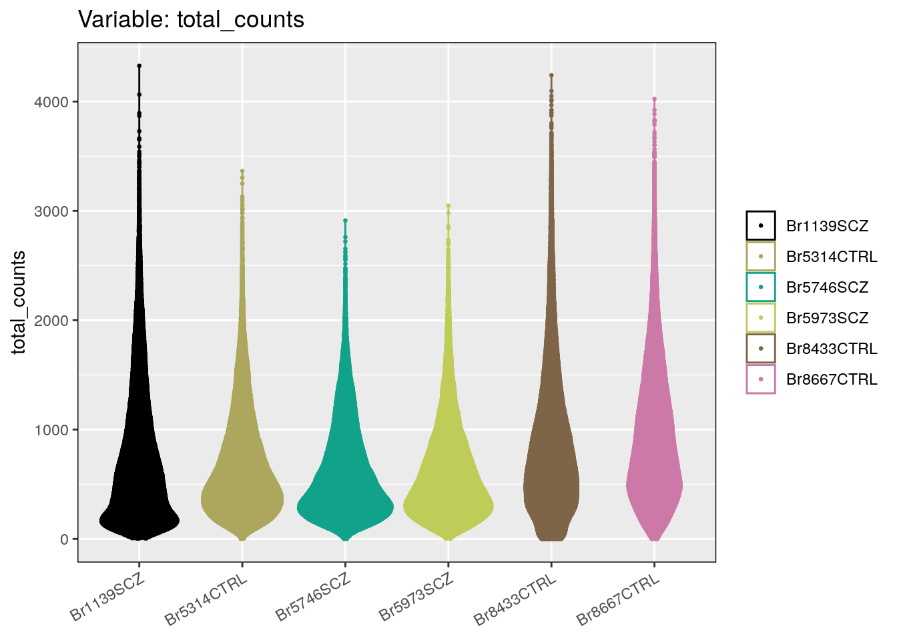
Violin plot of genes per spot/cell for each sample
distribution_plots(scz_spatial, plot_type='violin', plot_meta='total_genes')$total_genes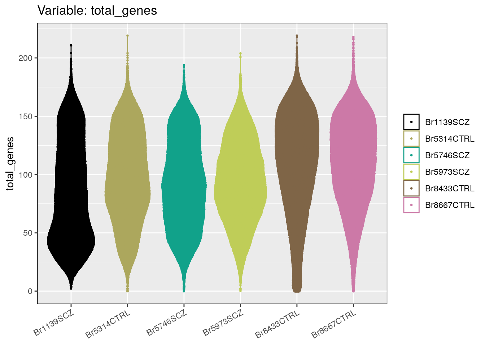
What do we observe:
- There aren’t any samples that have a huge number of counts or genes higher than other samples, so I don’t think we’ll need to use a spot_max* argument within the
filter_datafunction - Every sample has at least 0 or 2 counts as a minimum (I’m surprised that it reports 0 and not the lowest non-zero value)
- Every sample has at least 0 or 2 genes as a minimum as well.
- Mean counts is around 600-900, with maxes in the thousands.
- Going to set a minimum of 500 reads/counts for each spot/cell since that’s a little below the mean.
- Mean genes is around 80-110, with maxes around 200.
- Going to set a minimum of 50 genes for each spot/cell since that’s a little below the mean.
- Some samples have a lot more spots/cells than others …. I should probably make a table after filtering to see if there are a similar number of spots/cells after filtering. But I also figure that means the tissue is different sizes?
Won’t need to save data at the end of this step because we haven’t changed anything.
Data Wrangling
If you have been following along but stopped, we could load our imported data like so:
Add instructions for loading the data…
If you skipped the data import section click here.
Add instructions for loading the data…
Filtering
Note that values used for filtering here are based on results in the data exploration section above. So it and the data exploration section should either be combined in the final case study draft, or we’ll add a note about people needing to visit the data exploration step to under the values we’re using.
scz_spatial <- spatialGE::filter_data(scz_spatial,
spot_minreads=50,
spot_maxreads=3500,
spot_mingenes=10)How do you report which cell barcodes were filtered?
Add info here on how to assess and report which cell barcodes were filtered out. Note that we can compare to the ones that the original study filtered out.What do the distributions look like now?
summarize_STlist(scz_spatial) %>% print(width = Inf)# A tibble: 6 × 9
sample_name spotscells genes min_counts_per_spotcell mean_counts_per_spotcell
<chr> <int> <int> <dbl> <dbl>
1 Br1139SCZ 59569 541 50 754.
2 Br5314CTRL 48453 541 50 681.
3 Br5746SCZ 45537 541 50 617.
4 Br5973SCZ 44483 541 50 622.
5 Br8433CTRL 59724 541 50 889.
6 Br8667CTRL 68491 541 50 945.
max_counts_per_spotcell min_genes_per_spotcell mean_genes_per_spotcell
<dbl> <int> <dbl>
1 3498 10 86.4
2 3365 10 97.7
3 2912 11 92.6
4 3048 10 94.6
5 3500 11 112.
6 3499 10 111.
max_genes_per_spotcell
<int>
1 211
2 219
3 194
4 204
5 219
6 218distribution_plots(scz_spatial, plot_type='violin', plot_meta='total_counts')$total_counts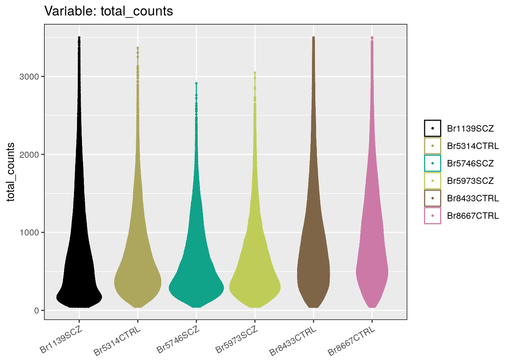
distribution_plots(scz_spatial, plot_type='violin', plot_meta='total_genes')$total_genes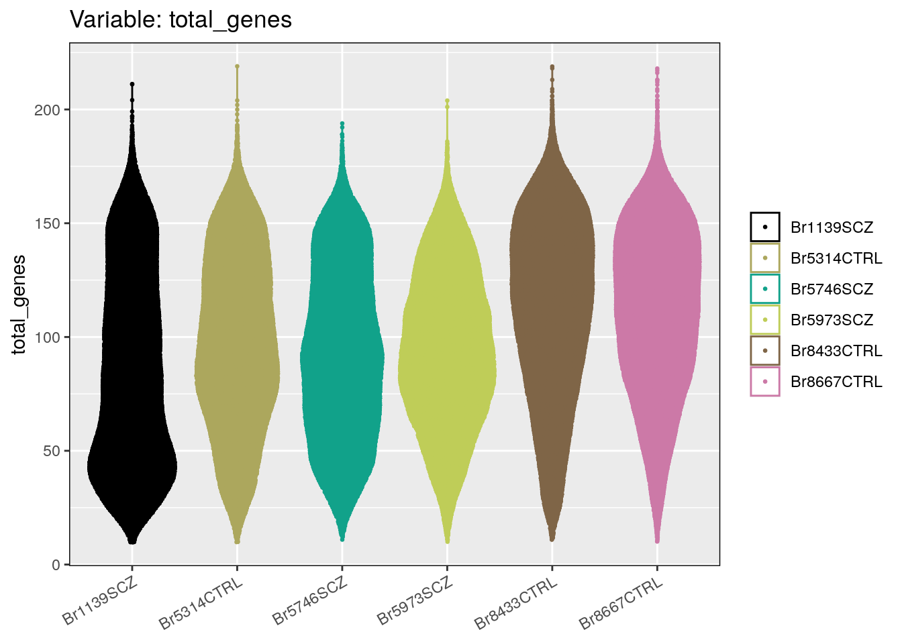
Normalizing
Transformation with spatialGE uses either log-transformation or the SCTransform method.
We’ll need a second STlist object so we can run two different transformations and compare them.
scz_spatial_tr <- rlang::duplicate(scz_spatial)Log Transformation
Explain log transformation.
scz_spatial <- spatialGE::transform_data(scz_spatial, method='log', cores=2)SCTransform
Explain SCTransform method.
scz_spatial_tr <- transform_data(scz_spatial_tr, method = 'sct', cores = 2)Visualize
We can visualize the library size for each cell within each sample.
visualize_lib_size <- function(mat, title_name){
Matrix::colSums(mat) %>%
as.data.frame() %>%
ggplot(aes(x=`.`)) + geom_histogram(bins = 500) + theme_bw() + ggtitle(title_name)
}
patchwork::wrap_plots(purrr::map2(scz_spatial@counts, names(scz_spatial@counts), visualize_lib_size), nrow = 2) + patchwork::plot_annotation(title = "Raw counts")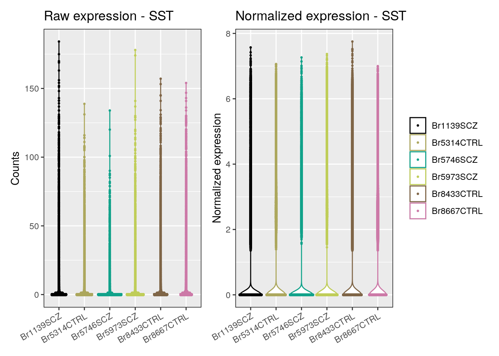
wrap_plots(purrr::map2(scz_spatial@tr_counts, names(scz_spatial@tr_counts), visualize_lib_size), nrow = 2) + plot_annotation(title = "Log transformed counts")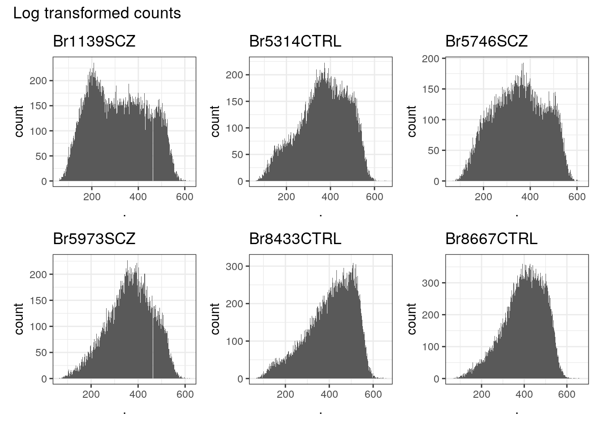
wrap_plots(map2(scz_spatial_tr@tr_counts, names(scz_spatial_tr@tr_counts), visualize_lib_size), nrow = 2) + plot_annotation(title = "SCTransform counts")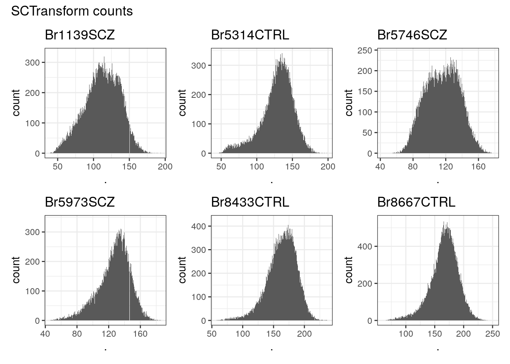
We can visualize the distribution of expression of a few genes (before and after the normalization) using the distribution_plots() function.
raw_plots <- distribution_plots(scz_spatial, genes = c("CX3CR1", "FKBP5", "PVALB", "MBP"), data_type = "raw")
transformed_log_plots <- distribution_plots(scz_spatial, genes = c("CX3CR1", "FKBP5", "PVALB", "MBP"), data_type = "tr")
transformed_sct_plots <- distribution_plots(scz_spatial_tr, genes = c("CX3CR1", "FKBP5", "PVALB", "MBP"), data_type = "tr")raw_plots$CX3CR1 + transformed_log_plots$CX3CR1 + transformed_sct_plots$CX3CR1 + patchwork::plot_layout(guides = "collect", nrow=3)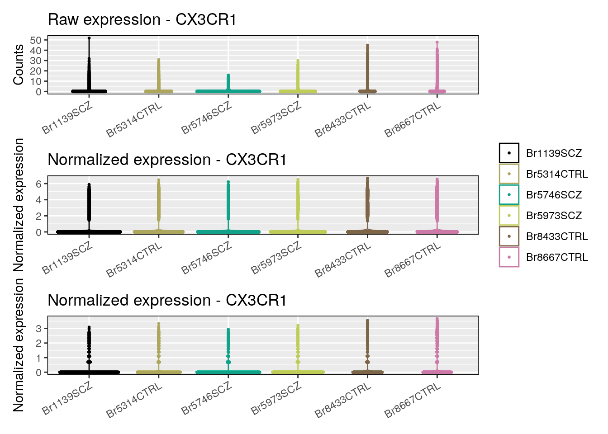
raw_plots$FKBP5 + transformed_log_plots$FKBP5 + transformed_sct_plots$FKBP5 + patchwork::plot_layout(guides = "collect", nrow=3)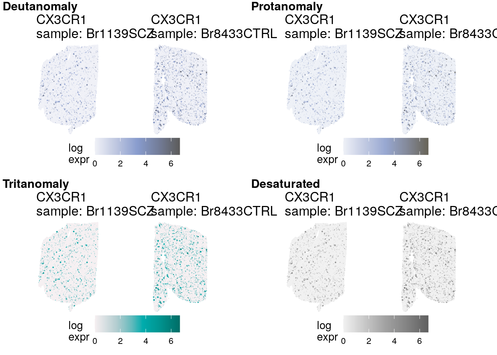
raw_plots$PVALB + transformed_log_plots$PVALB + transformed_sct_plots$PVALB + patchwork::plot_layout(guides = "collect", nrow=3)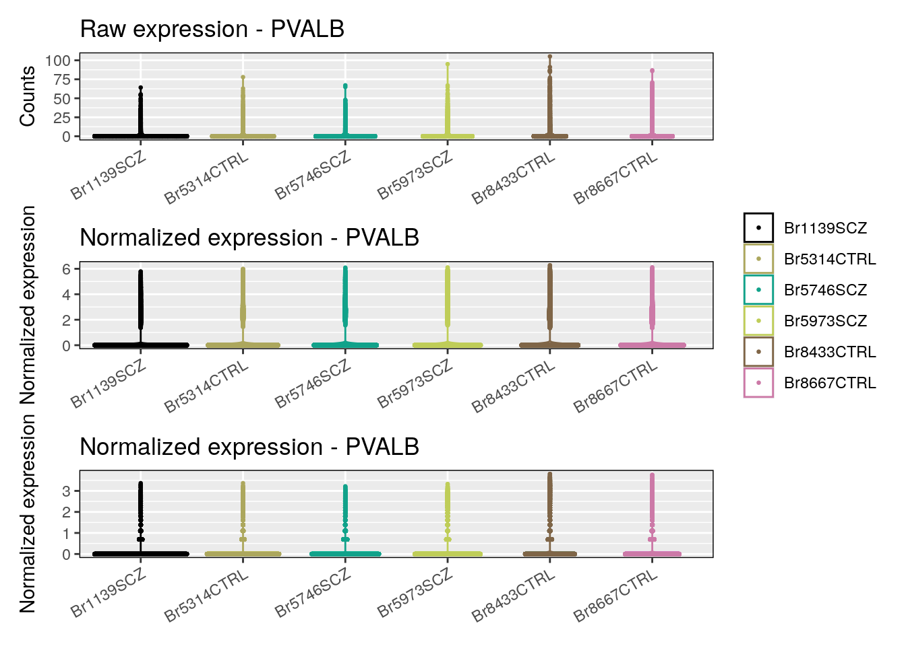
raw_plots$MBP + transformed_log_plots$MBP + transformed_sct_plots$MBP + patchwork::plot_layout(guides = "collect", nrow=3)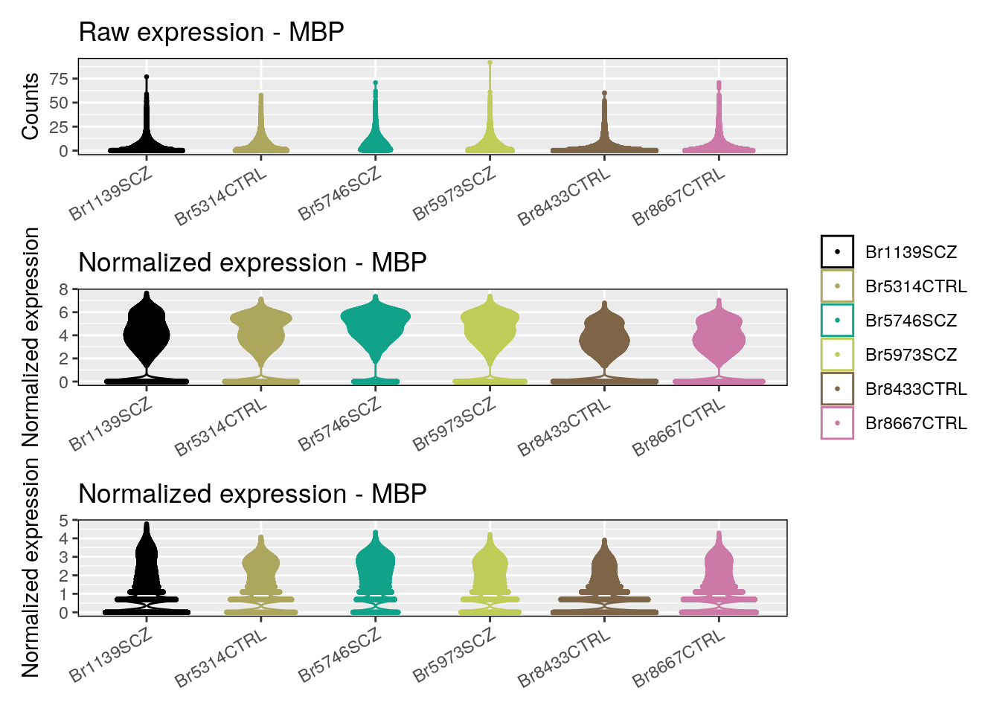
Now we want to clear up some R memory
rm(raw_plots, transformed_log_plots, transformed_sct_plots)
gc() used (Mb) gc trigger (Mb) max used (Mb)
Ncells 3842939 205.3 7498430 400.5 7498430 400.5
Vcells 223394921 1704.4 678440229 5176.1 678433776 5176.1saveRDS(scz_spatial, here("data/wrangled/scz_spatial.rds"))Data Visualization
If you have been following along but stopped, we could load our imported data like so:
Add instructions for loading the data…
If you skipped the data import section click here.
Add instructions for loading the data…
We are going to look at the expression of the genes FKBP5, CX3CR1, NTRK2 (thought question?), MBP, PVALB, and BDNF (thought question?). For each gene we are going to consider both the amount of its expression as well as where it is expressed (spatially) in the tissue samples. For each gene, we can visually compare its spatial expression in a sample from a neurotypical participant to a sample from a participant with Schizophrenia.
To visually explore the spatial distribution of expression of these genes, we are going to plot Quilt plots.
We’re going to make quilt plots showing the expression of these genes for each spot/cell in two samples (one NTC and one SCZ).
Note that quilt plots don’t require histology image (image of the tissue), because the spatial coordinates data that we input provides x and y coordinates for the center of each cell/spot. Therefore, we can place the location of these cells without a tissue image.
Also note that this is Xenium data which means there are a lot of cells! So we’re going to use the ptsize argument to set the point size of the spots or cells to be really small. If we make it too large, it’s dense/cramped/hard to view the quilt plot
I tested several color palettes and settled on PuBuGn…. more explanation below.
We have ggpubr combine the common legends and display them on the bottom. It also is plotting the quilt plots in a 2 X 2 grid
Differential Expression of Diffusely Distributed Genes
CX3CR1
quilt26CX3CR1 <- spatialGE::STplot(scz_spatial_tr,
samples = samples_metadata$DxID[c(2,6)],
genes = c("CX3CR1"),
color_pal='PuBuGn',
ptsize=0.05)
quiltArrangeCX3CR1 <- ggpubr::ggarrange(plotlist=quilt26CX3CR1,
nrow=1,
ncol=2,
legend='bottom',
common.legend = TRUE)
quiltArrangeCX3CR1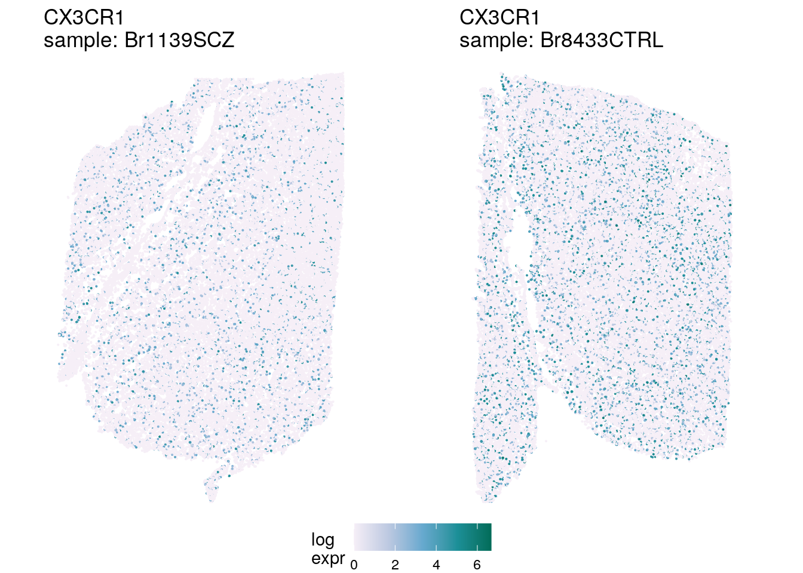
displayQuilt <- function(stlist, sampleNames, gene){
quiltPlots <- spatialGE::STplot(stlist,
samples = sampleNames,
genes = gene,
color_pal = 'PuBuGn',
ptsize=0.05
)
quiltArrange <- ggpubr::ggarrange(plotlist=quiltPlots,
nrow = 1,
ncol = 2,
legend = 'bottom',
common.legend = TRUE)
return(list(plots = quiltPlots, arranged = quiltArrange))
}sampleset2 <- samples_metadata$DxID[c(1,4)]
quiltCX3CR1_sampleset2 <- displayQuilt(scz_spatial_tr,
sampleset2,
"CX3CR1")
quiltCX3CR1_sampleset2$arranged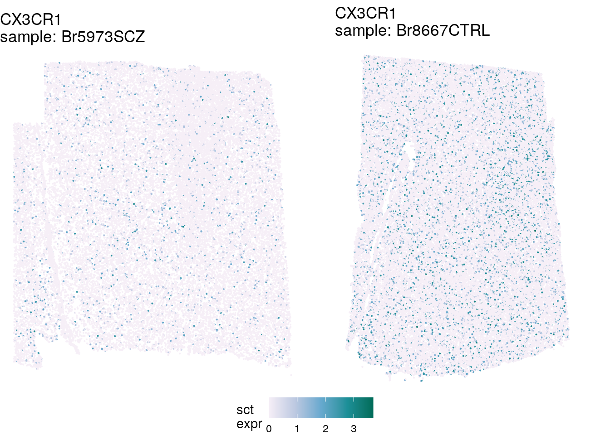
FKBP5
sampleset1 <- samples_metadata$DxID[c(2,6)]
quiltFKBP5_sampleset1 <- displayQuilt(scz_spatial_tr,
sampleset1,
"FKBP5")
quiltFKBP5_sampleset1$arranged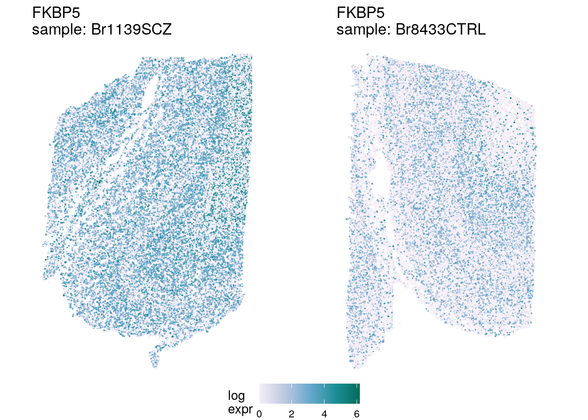
quiltFKBP5_sampleset2 <- displayQuilt(scz_spatial_tr,
sampleset2,
"FKBP5")
quiltFKBP5_sampleset2$arranged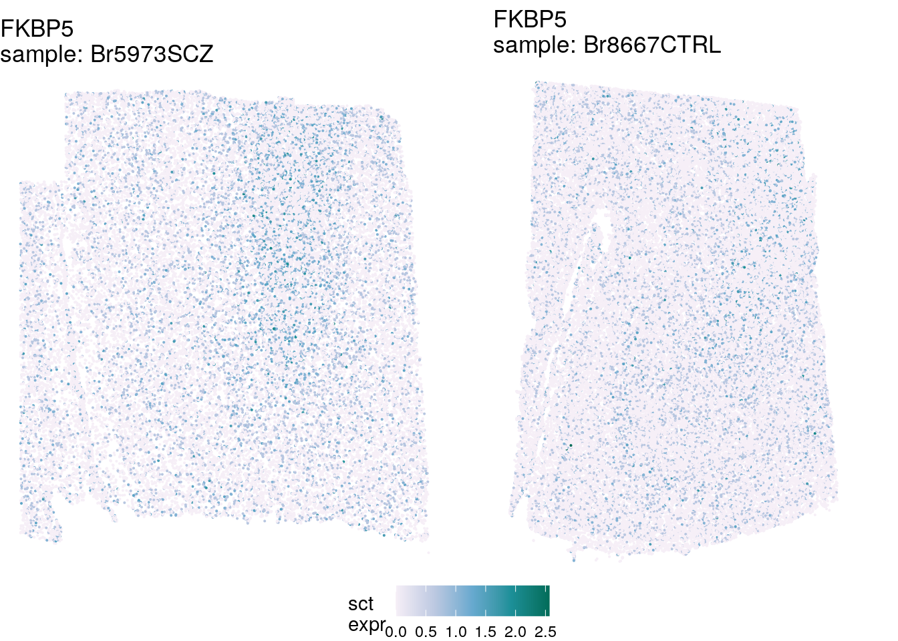
Differential Expression of Spatially Distributed Genes
MBP
quiltMBP_sampleset1 <- displayQuilt(scz_spatial_tr,
sampleset1,
"MBP")
quiltMBP_sampleset1$arranged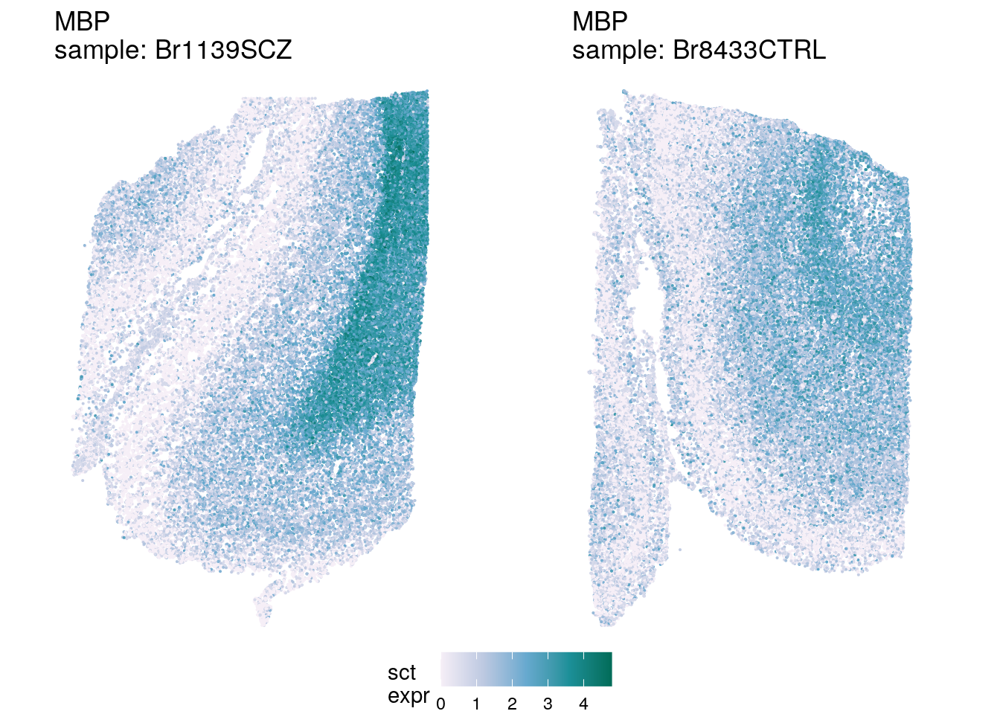
quiltMBP_sampleset2 <- displayQuilt(scz_spatial_tr,
sampleset2,
"MBP")
quiltMBP_sampleset2$arranged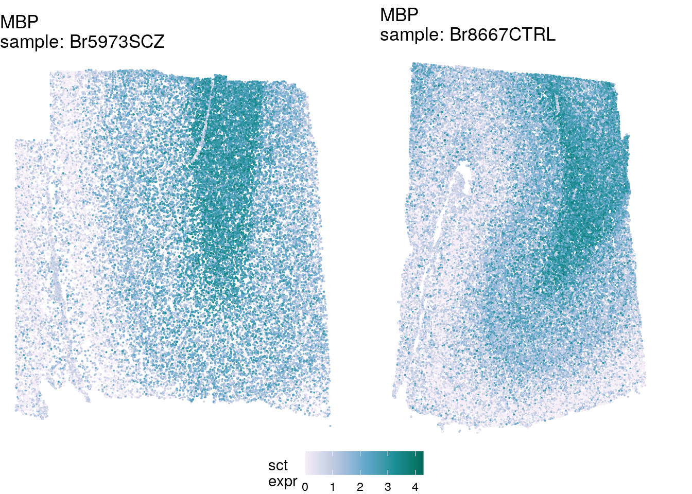
PVALB
quiltPVALB_sampleset1 <- displayQuilt(scz_spatial_tr,
sampleset1,
"PVALB")
quiltPVALB_sampleset1$arranged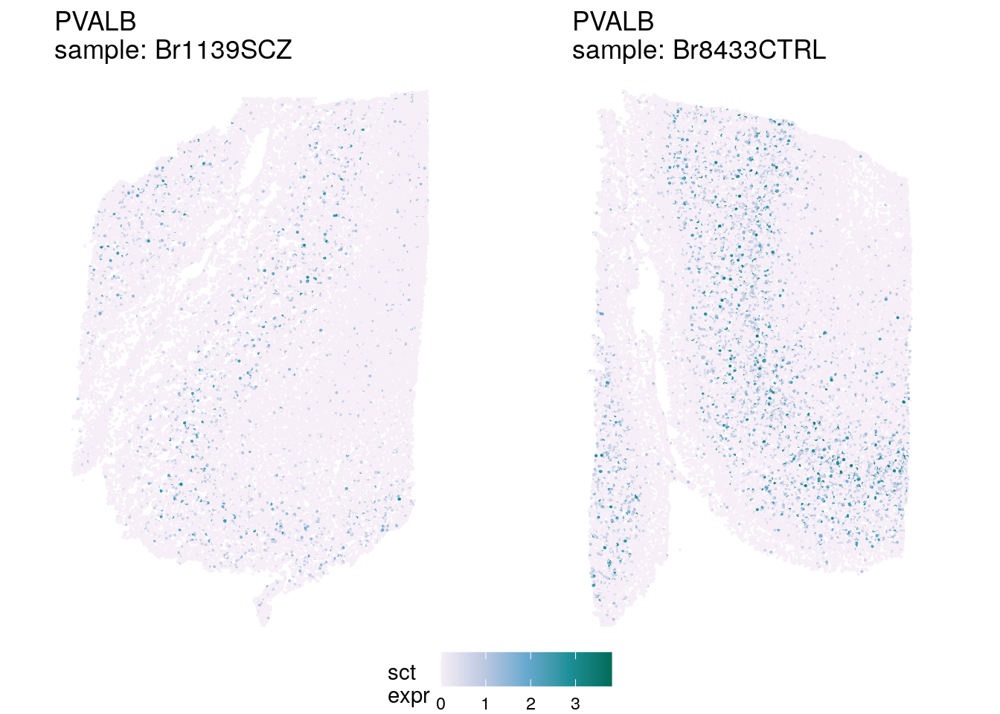
quiltPVALB_sampleset2 <- displayQuilt(scz_spatial_tr,
sampleset2,
"PVALB")
quiltPVALB_sampleset2$arranged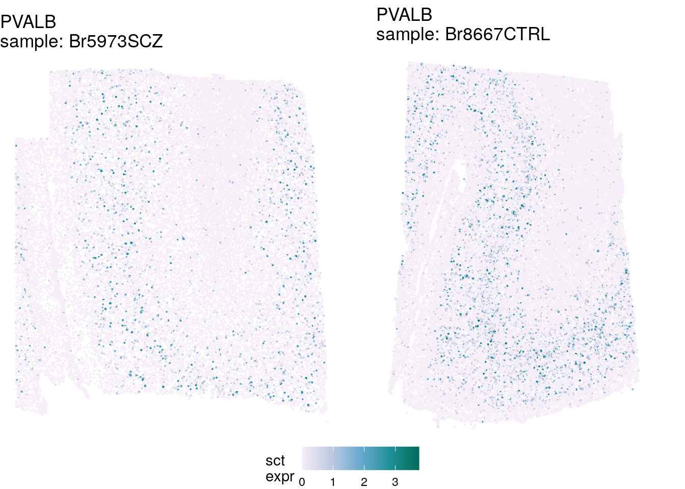
FKBP5 is annotated in the Figure 2a Volcano Plot as DEGs. I went to Supplementary Table 4 from the paper and found the gene with the lowest / most negative log fold change: CX3CR1
Color Palettes
I tested several color palettes and settled on PuBuGn for several reasons. (Note: this could be a cool side quest to include in the case study)
- Easier to distinguish changes in expression (e.g., up vs down regulated).
BuRdandSpectralwere best for this otherwise. - The lighter color was no longer in the center (as if the log expression values were “centered”) and instead is on the lower level of the spectrum.
Spectralwas the only other one not centered on white, but it was still centered on a lighter color. - Looking at the result with a color vision deficiency simulator (
cvg_grid()fromcolorblindr) the general conclusions are still possible in my opinion. This wasn’t the case withPrGn,BuRd, orSpectralwhen I tested them.
colorblindr::cvd_grid(plot = quiltArrangeCX3CR1)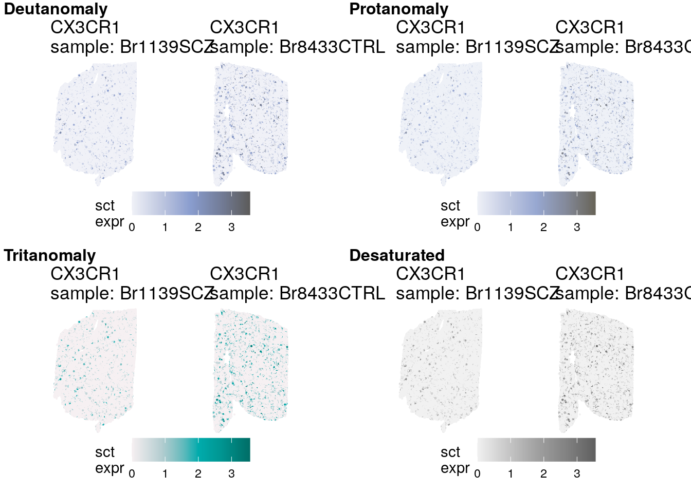
Data Analysis
If you have been following along but stopped, we could load our imported data like so:
Add instructions for loading the data…
If you skipped the data import section click here.
Add instructions for loading the data…
Clustering
cluster_assignments <- read.csv(here("data/wrangled/cluster_assignments_withlibname.csv")) %>%
rename(annot = Cluster) %>%
fill(annot) %>%
mutate(annot=case_when(
annot %in% c(6, 8, 1) ~ "Oligo",
annot == 10 ~ "Ambig/Oligo",
annot == 7 ~ "Mic",
annot == 15 ~ "Ambig/In/Endo",
annot == 18 ~ "L5 Ex",
annot == 14 ~ "L6 Ex",
annot == 11 ~ "L4/5 Ex",
annot == 2 ~ "L2/3 Ex",
annot %in% c(17, 16, 4) ~ "Ast",
annot %in% c(5, 13, 3) ~ "Endo",
annot == 12 ~ "CGE",
annot == 9 ~ "MGE",
.default = NA_character_))
for (name in names(scz_spatial_tr@spatial_meta)){
scz_spatial@spatial_meta[[name]] <- left_join(scz_spatial@spatial_meta[[name]],
cluster_assignments %>%
filter(SampleName == name) %>%
select(libname, annot)
)
scz_spatial_tr@spatial_meta[[name]] <- left_join(scz_spatial_tr@spatial_meta[[name]],
cluster_assignments %>%
filter(SampleName == name) %>%
select(libname, annot)
)
}Joining with `by = join_by(libname)`
Joining with `by = join_by(libname)`
Joining with `by = join_by(libname)`
Joining with `by = join_by(libname)`
Joining with `by = join_by(libname)`
Joining with `by = join_by(libname)`
Joining with `by = join_by(libname)`
Joining with `by = join_by(libname)`
Joining with `by = join_by(libname)`
Joining with `by = join_by(libname)`
Joining with `by = join_by(libname)`
Joining with `by = join_by(libname)`Spatial distribution of expression
cellType <- STplot(scz_spatial_tr, plot_meta = "annot", samples = sampleset1)
combined_list <- c(cellType, quiltMBP_sampleset1$plots)
ggpubr::ggarrange(plotlist = combined_list, ncol=2, nrow=2, labels = "AUTO")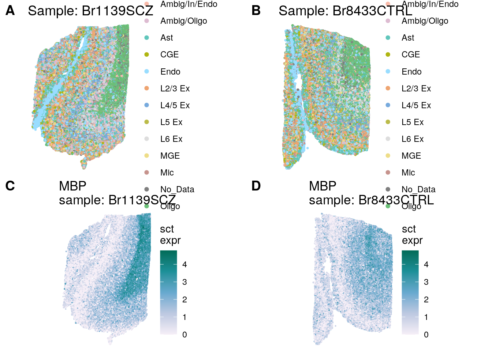
combined_list2 <- c(cellType, quiltPVALB_sampleset1$plots)
ggpubr::ggarrange(plotlist = combined_list2, ncol=2, nrow=2, labels = "AUTO")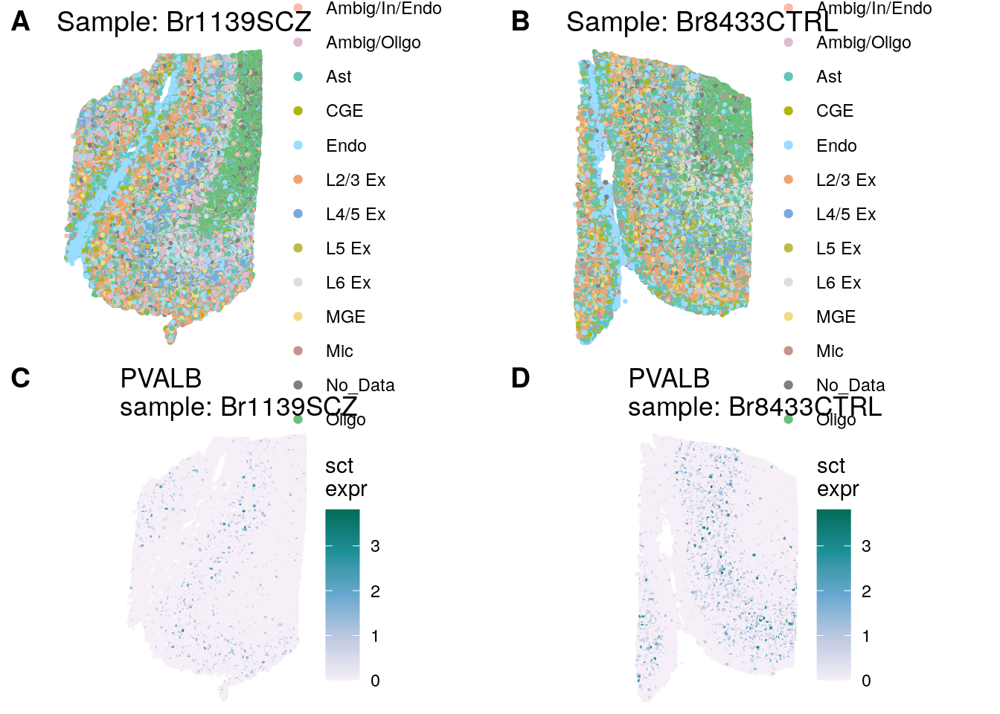
Gene specific summaries of expression
We can also look at summaries of the expression of a few of these genes in these cell types.
combine_counts_annot <- function(matannot, matcount, sample_name, gene_name){
full_join(
matannot[[sample_name]][,c("libname", "annot")],
matcount[[sample_name]][gene_name, ] %>%
data.frame() %>%
rownames_to_column("libname")
) %>% `colnames<-`(c("libname", "annot", sample_name))
}
use_combined_data <- function(mat, gene_name, use = "violin", samples = c("Br1139SCZ", "Br5314CTRL")){
combined_data <- bind_rows(combine_counts_annot(mat@spatial_meta, mat@tr_counts, samples[1], gene_name),
combine_counts_annot(mat@spatial_meta, mat@tr_counts, samples[2], gene_name)) %>%
pivot_longer(starts_with("Br"),
values_to = "tr_counts",
names_to = "sample") %>%
drop_na()
if (use == "violin"){
return(
combined_data %>%
ggplot(aes(x = sample,
y = tr_counts,
fill = sample)) +
geom_violin() +
facet_wrap(~annot, scales = "free_y") +
theme_bw() +
scale_fill_viridis_d(end = 0.6) +
ggtitle(gene_name) +
theme(legend.position = "bottom")
)
} else if (use == "summary"){
table_length <- length(unique(combined_data$annot)) * 2
return(
combined_data %>%
group_by(annot, sample) %>%
summarize(
min_exp = min(tr_counts),
max_exp = max(tr_counts),
avg_exp = mean(tr_counts),
median_exp = median(tr_counts),
var_exp = var(tr_counts)
) %>%
print(n=table_length)
)
} else {
message("No other downstream uses supported besides 'violin' and 'summary'")
}
}use_combined_data(scz_spatial, use = "violin", gene_name = "MBP")Joining with `by = join_by(libname)`
Joining with `by = join_by(libname)`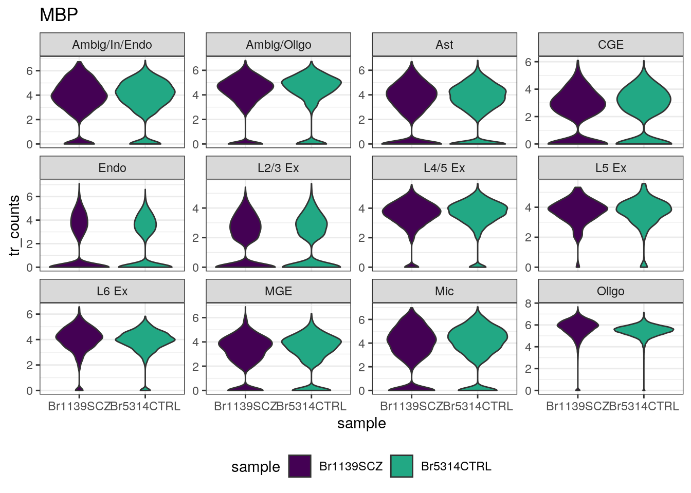
use_combined_data(scz_spatial, use = "summary", gene_name = "PVALB")Joining with `by = join_by(libname)`
Joining with `by = join_by(libname)`
`summarise()` has grouped output by 'annot'. You can override using the
`.groups` argument.# A tibble: 24 × 7
# Groups: annot [12]
annot sample min_exp max_exp avg_exp median_exp var_exp
<chr> <chr> <dbl> <dbl> <dbl> <dbl> <dbl>
1 Ambig/In/Endo Br1139SCZ 0 4.28 0.150 0 0.389
2 Ambig/In/Endo Br5314CTRL 0 5.07 0.201 0 0.577
3 Ambig/Oligo Br1139SCZ 0 3.95 0.105 0 0.298
4 Ambig/Oligo Br5314CTRL 0 4.36 0.202 0 0.632
5 Ast Br1139SCZ 0 4.96 0.134 0 0.346
6 Ast Br5314CTRL 0 4.79 0.184 0 0.458
7 CGE Br1139SCZ 0 4.05 0.117 0 0.265
8 CGE Br5314CTRL 0 4.03 0.239 0 0.561
9 Endo Br1139SCZ 0 4.59 0.0619 0 0.182
10 Endo Br5314CTRL 0 4.66 0.109 0 0.335
11 L2/3 Ex Br1139SCZ 0 4.35 0.123 0 0.278
12 L2/3 Ex Br5314CTRL 0 4.95 0.229 0 0.568
13 L4/5 Ex Br1139SCZ 0 4.48 0.198 0 0.443
14 L4/5 Ex Br5314CTRL 0 4.63 0.346 0 0.759
15 L5 Ex Br1139SCZ 0 2.59 0.0828 0 0.175
16 L5 Ex Br5314CTRL 0 3.42 0.265 0 0.611
17 L6 Ex Br1139SCZ 0 3.29 0.0567 0 0.132
18 L6 Ex Br5314CTRL 0 3.69 0.0837 0 0.210
19 MGE Br1139SCZ 0 5.78 1.25 0 3.22
20 MGE Br5314CTRL 0 5.97 1.89 0 4.73
21 Mic Br1139SCZ 0 4.73 0.163 0 0.430
22 Mic Br5314CTRL 0 4.81 0.247 0 0.677
23 Oligo Br1139SCZ 0 5.69 0.0978 0 0.343
24 Oligo Br5314CTRL 0 5.01 0.101 0 0.294Violin plots of normalized expression by cell type and sample.
use_combined_data(scz_spatial, use = "violin", gene_name = "PVALB")Joining with `by = join_by(libname)`
Joining with `by = join_by(libname)`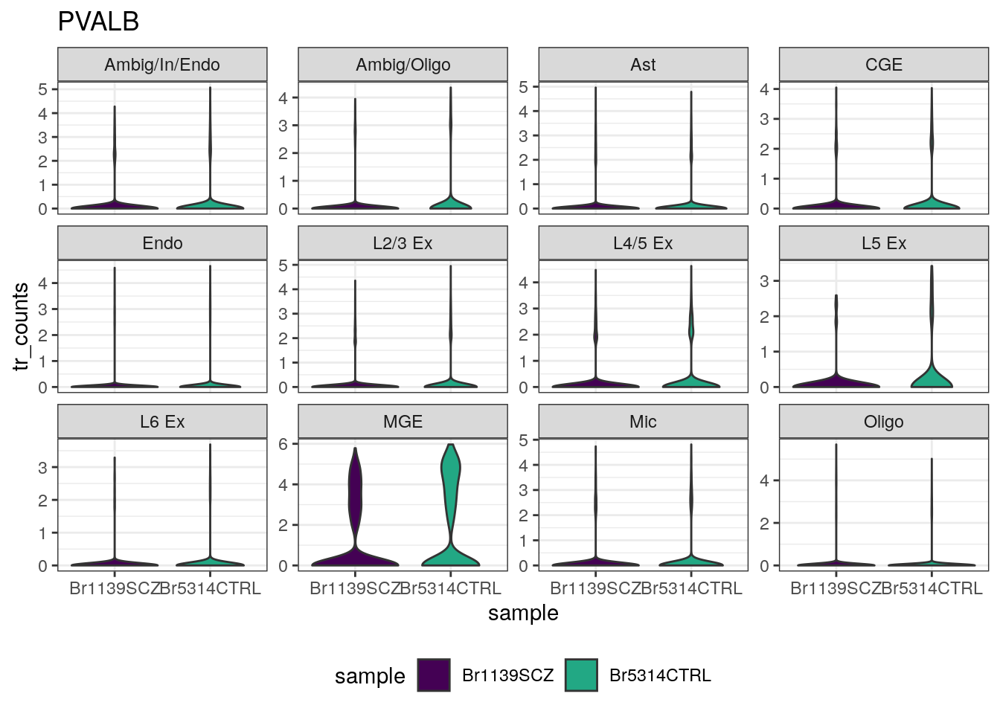
Summary tables of normalized expression by cell type and sample.
use_combined_data(scz_spatial, use = "summary", gene_name = "PVALB")Joining with `by = join_by(libname)`
Joining with `by = join_by(libname)`
`summarise()` has grouped output by 'annot'. You can override using the
`.groups` argument.# A tibble: 24 × 7
# Groups: annot [12]
annot sample min_exp max_exp avg_exp median_exp var_exp
<chr> <chr> <dbl> <dbl> <dbl> <dbl> <dbl>
1 Ambig/In/Endo Br1139SCZ 0 4.28 0.150 0 0.389
2 Ambig/In/Endo Br5314CTRL 0 5.07 0.201 0 0.577
3 Ambig/Oligo Br1139SCZ 0 3.95 0.105 0 0.298
4 Ambig/Oligo Br5314CTRL 0 4.36 0.202 0 0.632
5 Ast Br1139SCZ 0 4.96 0.134 0 0.346
6 Ast Br5314CTRL 0 4.79 0.184 0 0.458
7 CGE Br1139SCZ 0 4.05 0.117 0 0.265
8 CGE Br5314CTRL 0 4.03 0.239 0 0.561
9 Endo Br1139SCZ 0 4.59 0.0619 0 0.182
10 Endo Br5314CTRL 0 4.66 0.109 0 0.335
11 L2/3 Ex Br1139SCZ 0 4.35 0.123 0 0.278
12 L2/3 Ex Br5314CTRL 0 4.95 0.229 0 0.568
13 L4/5 Ex Br1139SCZ 0 4.48 0.198 0 0.443
14 L4/5 Ex Br5314CTRL 0 4.63 0.346 0 0.759
15 L5 Ex Br1139SCZ 0 2.59 0.0828 0 0.175
16 L5 Ex Br5314CTRL 0 3.42 0.265 0 0.611
17 L6 Ex Br1139SCZ 0 3.29 0.0567 0 0.132
18 L6 Ex Br5314CTRL 0 3.69 0.0837 0 0.210
19 MGE Br1139SCZ 0 5.78 1.25 0 3.22
20 MGE Br5314CTRL 0 5.97 1.89 0 4.73
21 Mic Br1139SCZ 0 4.73 0.163 0 0.430
22 Mic Br5314CTRL 0 4.81 0.247 0 0.677
23 Oligo Br1139SCZ 0 5.69 0.0978 0 0.343
24 Oligo Br5314CTRL 0 5.01 0.101 0 0.294use_combined_data(scz_spatial_tr, use = "violin", gene_name = "MBP")Joining with `by = join_by(libname)`
Joining with `by = join_by(libname)`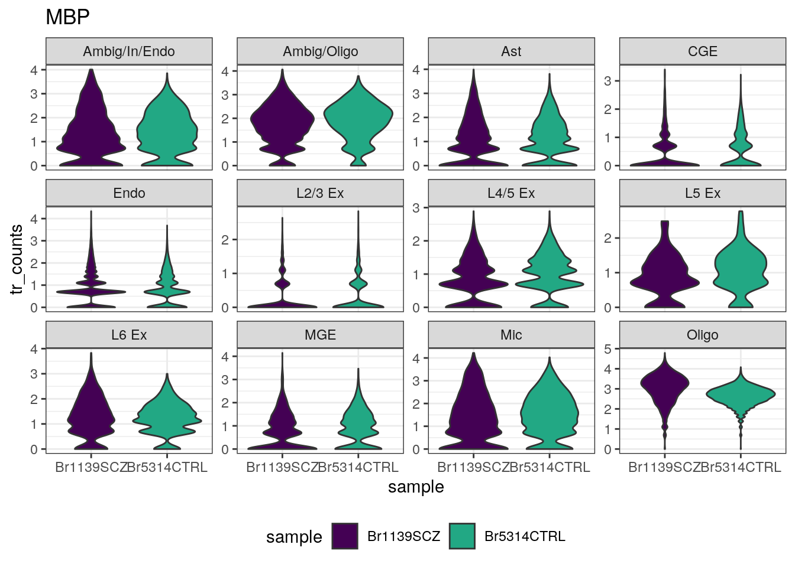
use_combined_data(scz_spatial_tr, use = "summary", gene_name = "MBP")Joining with `by = join_by(libname)`
Joining with `by = join_by(libname)`
`summarise()` has grouped output by 'annot'. You can override using the
`.groups` argument.# A tibble: 24 × 7
# Groups: annot [12]
annot sample min_exp max_exp avg_exp median_exp var_exp
<chr> <chr> <dbl> <dbl> <dbl> <dbl> <dbl>
1 Ambig/In/Endo Br1139SCZ 0 4.01 1.33 1.10 1.00
2 Ambig/In/Endo Br5314CTRL 0 3.85 1.37 1.39 0.757
3 Ambig/Oligo Br1139SCZ 0 4.06 1.74 1.79 0.715
4 Ambig/Oligo Br5314CTRL 0 3.78 1.86 1.95 0.644
5 Ast Br1139SCZ 0 3.99 1.09 1.10 0.856
6 Ast Br5314CTRL 0 3.81 1.15 1.10 0.672
7 CGE Br1139SCZ 0 3.40 0.444 0 0.409
8 CGE Br5314CTRL 0 3.22 0.607 0.693 0.413
9 Endo Br1139SCZ 0 4.33 0.957 0.693 0.605
10 Endo Br5314CTRL 0 3.69 0.867 0.693 0.480
11 L2/3 Ex Br1139SCZ 0 2.64 0.274 0 0.238
12 L2/3 Ex Br5314CTRL 0 2.83 0.357 0 0.270
13 L4/5 Ex Br1139SCZ 0 2.89 0.847 0.693 0.397
14 L4/5 Ex Br5314CTRL 0 2.89 1.02 1.10 0.355
15 L5 Ex Br1139SCZ 0 2.48 0.890 0.693 0.383
16 L5 Ex Br5314CTRL 0 2.77 1.06 1.10 0.369
17 L6 Ex Br1139SCZ 0 3.83 1.27 1.10 0.639
18 L6 Ex Br5314CTRL 0 3.00 1.23 1.10 0.380
19 MGE Br1139SCZ 0 4.14 0.777 0.693 0.579
20 MGE Br5314CTRL 0 3.47 0.953 1.10 0.523
21 Mic Br1139SCZ 0 4.22 1.38 1.39 1.15
22 Mic Br5314CTRL 0 4.03 1.50 1.61 0.849
23 Oligo Br1139SCZ 0 4.79 3.00 3.14 0.506
24 Oligo Br5314CTRL 0 4.08 2.64 2.71 0.211use_combined_data(scz_spatial_tr, use = "violin", gene_name = "PVALB")Joining with `by = join_by(libname)`
Joining with `by = join_by(libname)`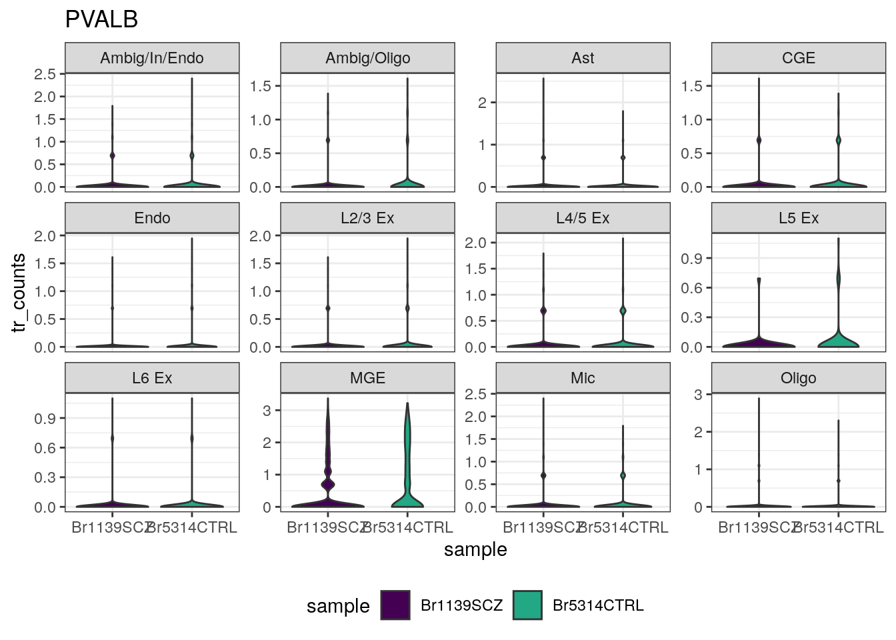
use_combined_data(scz_spatial_tr, use = "summary", gene_name = "PVALB")Joining with `by = join_by(libname)`
Joining with `by = join_by(libname)`
`summarise()` has grouped output by 'annot'. You can override using the
`.groups` argument.# A tibble: 24 × 7
# Groups: annot [12]
annot sample min_exp max_exp avg_exp median_exp var_exp
<chr> <chr> <dbl> <dbl> <dbl> <dbl> <dbl>
1 Ambig/In/Endo Br1139SCZ 0 1.79 0.0439 0 0.0353
2 Ambig/In/Endo Br5314CTRL 0 2.40 0.0546 0 0.0518
3 Ambig/Oligo Br1139SCZ 0 1.39 0.0273 0 0.0204
4 Ambig/Oligo Br5314CTRL 0 1.61 0.0522 0 0.0459
5 Ast Br1139SCZ 0 2.56 0.0374 0 0.0296
6 Ast Br5314CTRL 0 1.79 0.0381 0 0.0286
7 CGE Br1139SCZ 0 1.61 0.0327 0 0.0237
8 CGE Br5314CTRL 0 1.39 0.0492 0 0.0351
9 Endo Br1139SCZ 0 1.61 0.0163 0 0.0129
10 Endo Br5314CTRL 0 1.95 0.0284 0 0.0245
11 L2/3 Ex Br1139SCZ 0 1.61 0.0311 0 0.0226
12 L2/3 Ex Br5314CTRL 0 1.95 0.0476 0 0.0385
13 L4/5 Ex Br1139SCZ 0 1.79 0.0536 0 0.0408
14 L4/5 Ex Br5314CTRL 0 2.08 0.0628 0 0.0459
15 L5 Ex Br1139SCZ 0 0.693 0.0190 0 0.0129
16 L5 Ex Br5314CTRL 0 1.10 0.0475 0 0.0341
17 L6 Ex Br1139SCZ 0 1.10 0.0143 0 0.00993
18 L6 Ex Br5314CTRL 0 1.10 0.0180 0 0.0130
19 MGE Br1139SCZ 0 3.37 0.493 0 0.633
20 MGE Br5314CTRL 0 3.22 0.749 0 0.958
21 Mic Br1139SCZ 0 2.40 0.0475 0 0.0391
22 Mic Br5314CTRL 0 1.79 0.0654 0 0.0536
23 Oligo Br1139SCZ 0 2.89 0.0267 0 0.0264
24 Oligo Br5314CTRL 0 2.30 0.0264 0 0.0224 Summary
Synopsis
Summary Plot
Continued Learning
Common Next Steps
Discuss common next steps for this type of an analysis in this box. Is there a specific number of steps that you need to do before a specific step? Is a “next step” more of an alternate step?
For the suggested homework, I think it would make sense to do a PCA of the samples, which is something Brooke had suggested. We can do this locally like all the steps except for the autocorrelation analysis.
scz_spatial <- pseudobulk_samples(scz_spatial, max_var_genes = 150) #decreased compared to the default since the Xenium panel is based on a lower number of genes than say Visium data
pseudobulk_heatmap(scz_spatial)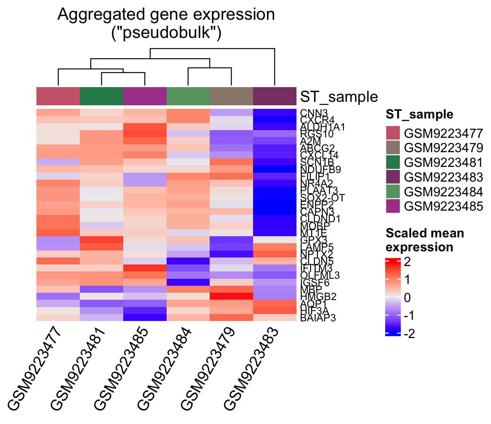
pseudobulk_dim_plot(scz_spatial)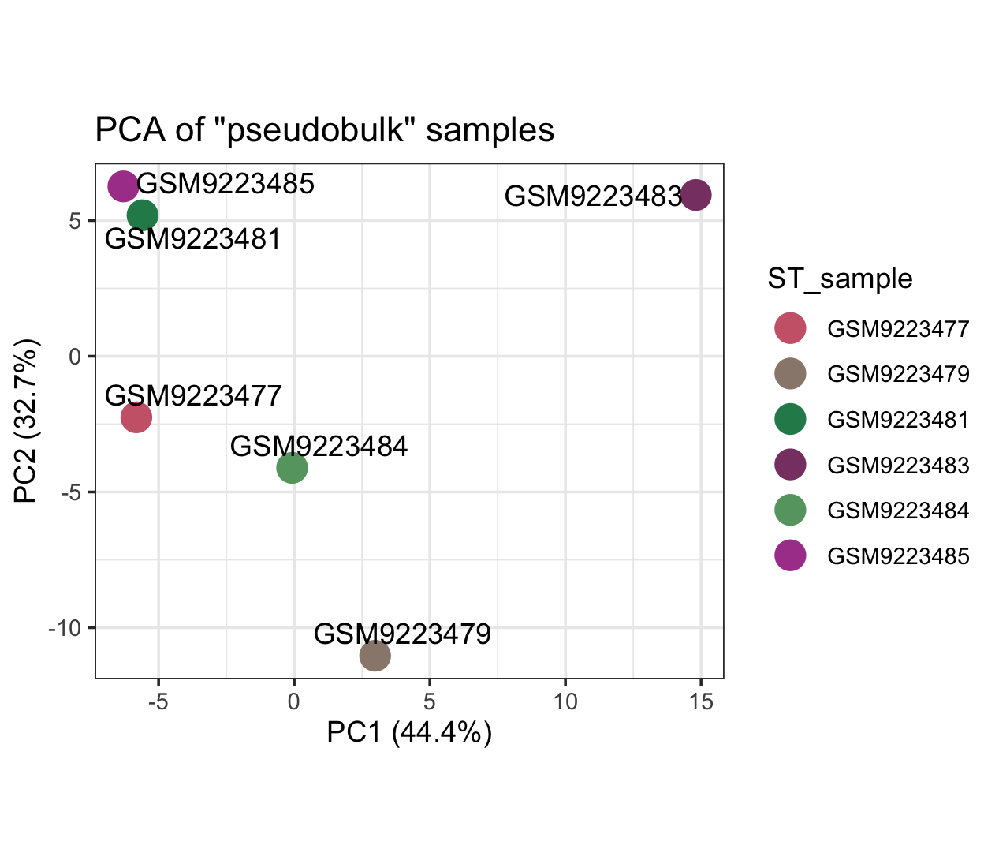
When I try to color the PCA plot by a variable in my sample metadata (using plot_meta parameter), it errors and tells me that data doesn’t exist. I’ve tried changing capitalization and several other steps, but the value should be there.
Do you know what I could be doing wrong here using the plot_meta argument?
Column names:
X1 `Brain Number (ID)` Sex PrimaryDxError:
Error in prepare_pseudobulk_meta(x, plot_meta) :
Variable not in sample metadata. Verify that input matches variable name in sample dataAdvancement Exercises
Use this section to suggest different levels of exercises that build upon topics from the case study … next steps, tangential skills, diving deeper into a side quest, etc.
Perhaps explain how the suggested exercises relate to the common next steps.
Beginner
Intermediate
Advanced
Additional Information
Helpful Links
Glossary
Warning in readLines(file, warn = readLines.warn): incomplete final line found
on 'glossary.yml'| Term | Definition |
| Barcodes | Filler. |
| Classification | Filler. |
| Clustering | Filler. |
| Coefficient | Filler. |
| Cohort | Filler. |
| Color palette | Filler. |
| Compressed | Filler. |
| Coordinates | Filler. |
| Counts | Filler. |
| Deconvolution | Filler. |
| Differential Expression | Filler. |
| Directories | Filler. |
| Distribution | Filler. |
| Doublet | Filler. |
| Droplet | Filler. |
| Enrichment | Filler. |
| Features | Filler. |
| Filtering | Filler. |
| GEO | Gene Expression Omnibus. |
| GUI | Graphical User Interface. |
| Guide | Another term for legend. |
| Histology | Filler. |
| Image-based technologies | Filler. |
| Index | Filler. |
| lapply | Filler. |
| log transformation | Filler. |
| Loop | Filler. |
| Matrix | Filler. |
| Metadata | Descriptive information describing other data. Descriptions may include how or when that data was generated, source organisms, associated patient IDs, or demographic information. |
| mRNA | messenger RNA. |
| Multicellular | Filler. |
| Neurotypical | Filler. |
| Normalization | Filler. |
| Package | Software. |
| Panel | Filler. |
| Parquet | Filler. |
| PCA | Principal component analysis. |
| Personally Identifiable Information | Data unique to an individual person that can be used to distinguish their identity, including full names, Social Security numbers, contact information, etc.; abbreviated as "PII". |
| PMI | Postmortem Interval. |
| Postmortem samples | Samples collected after death. |
| Protected Health Information | A subset of PII that includes any health information that can identify an individual that is regulated by HIPAA, including full name, contact information, medical records, health insurance information, biometric elements, etc.; abbreviated as "PHI". |
| Pseudobulk | Filler. |
| Quality Control | Filler. |
| Quilt plot | Filler. |
| R-squared | Filler. |
| Random seed | Filler. |
| Resolution | Filler. |
| RIN | RNA Integrity Number. |
| Schizophrenia | Filler. |
| Segmentation | Filler. |
| Sequence-based technologies | Filler. |
| Sequencing | A laboratory technique that extracts and analyzes the genetic material from a sample. |
| Slope | Filler. |
| Sparse | Low coverage; lots of zeros. |
| Spatial Transcriptomics | Gene expression and the location of the gene within a tissue. Spatially-informed gene expression data. |
| Specialized cell | Filler. |
| Spot | Filler. |
| STlist | Filler. |
| Subcellular | Filler. |
| Vertex | Filler. |
| Visium | Filler. |
| Xenium | Filler. |
References
Kwon, Sang Ho, Boyi Guo, Cindy Fang, Madhavi Tippani, Svitlana V. Bach, Ryan A. Miller, Sarah E. Maguire, et al. 2026. “Mapping Spatially Organized Molecular and Genetic Signatures of Schizophrenia Across Multiple Scales in Human Prefrontal Cortex,” February, 2026.02.16.706214. https://doi.org/10.64898/2026.02.16.706214.
Session Info
devtools::session_info()─ Session info ───────────────────────────────────────────────────────────────
setting value
version R version 4.3.2 (2023-10-31)
os Ubuntu 22.04.4 LTS
system x86_64, linux-gnu
ui X11
language (EN)
collate en_US.UTF-8
ctype en_US.UTF-8
tz Etc/UTC
date 2026-10-10
pandoc 3.1.1 @ /usr/local/bin/ (via rmarkdown)
─ Packages ───────────────────────────────────────────────────────────────────
package * version date (UTC) lib source
abind 1.4-8 2024-09-12 [1] CRAN (R 4.3.2)
arrow * 25.0.1 2026-08-23 [1] CRAN (R 4.3.2)
assertthat 0.2.1 2019-03-21 [1] RSPM (R 4.3.0)
backports 1.4.1 2021-12-13 [1] RSPM (R 4.3.0)
bit 4.0.5 2022-11-15 [1] RSPM (R 4.3.0)
bit64 4.0.5 2020-08-30 [1] RSPM (R 4.3.0)
broom 1.0.12 2026-01-27 [1] CRAN (R 4.3.2)
cachem 1.0.8 2023-05-01 [1] RSPM (R 4.3.0)
car 3.1-5 2026-02-03 [1] CRAN (R 4.3.2)
carData 3.0-6 2026-01-30 [1] CRAN (R 4.3.2)
class 7.3-22 2023-05-03 [2] CRAN (R 4.3.2)
classInt 0.4-11 2025-01-08 [1] CRAN (R 4.3.2)
cli 3.6.2 2023-12-11 [1] RSPM (R 4.3.0)
colorblindr * 0.1.0 2026-10-02 [1] Github (clauswilke/colorblindr@90d64f8)
colorspace * 2.1-0 2023-01-23 [1] RSPM (R 4.3.0)
cowplot 1.2.0 2025-07-07 [1] CRAN (R 4.3.2)
crayon 1.5.2 2022-09-29 [1] RSPM (R 4.3.0)
DBI 1.2.2 2024-02-16 [1] RSPM (R 4.3.0)
devtools 2.4.5 2022-10-11 [1] RSPM (R 4.3.0)
digest 0.6.34 2024-01-11 [1] RSPM (R 4.3.0)
dplyr * 1.1.4 2023-11-17 [1] RSPM (R 4.3.0)
e1071 1.7-17 2025-12-18 [1] CRAN (R 4.3.2)
ellipsis 0.3.2 2021-04-29 [1] RSPM (R 4.3.0)
evaluate 0.23 2023-11-01 [1] RSPM (R 4.3.0)
fansi 1.0.6 2023-12-08 [1] RSPM (R 4.3.0)
farver 2.1.1 2022-07-06 [1] RSPM (R 4.3.0)
fastmap 1.1.1 2023-02-24 [1] RSPM (R 4.3.0)
forcats * 1.0.0 2023-01-29 [1] RSPM (R 4.3.0)
Formula 1.2-5 2023-02-24 [1] CRAN (R 4.3.2)
fs 1.6.3 2023-07-20 [1] RSPM (R 4.3.0)
generics 0.1.3 2022-07-05 [1] RSPM (R 4.3.0)
ggforce 0.4.2 2024-02-19 [1] RSPM (R 4.3.0)
ggplot2 * 4.0.2 2026-02-03 [1] CRAN (R 4.3.2)
ggpolypath 0.3.0 2023-09-25 [1] RSPM (R 4.3.0)
ggpubr * 0.6.3 2026-02-24 [1] CRAN (R 4.3.2)
ggsignif 0.6.4 2022-10-13 [1] CRAN (R 4.3.2)
glue 1.7.0 2024-01-09 [1] RSPM (R 4.3.0)
gridExtra 2.3 2017-09-09 [1] CRAN (R 4.3.2)
gtable 0.3.6 2024-10-25 [1] CRAN (R 4.3.2)
here * 1.0.1 2020-12-13 [1] CRAN (R 4.3.2)
hms 1.1.3 2023-03-21 [1] RSPM (R 4.3.0)
htmltools 0.5.9 2025-12-04 [1] CRAN (R 4.3.2)
htmlwidgets 1.6.4 2023-12-06 [1] RSPM (R 4.3.0)
httpuv 1.6.14 2024-01-26 [1] RSPM (R 4.3.0)
jsonlite 1.8.8 2023-12-04 [1] RSPM (R 4.3.0)
KernSmooth 2.23-22 2023-07-10 [2] CRAN (R 4.3.2)
khroma 1.12.0 2024-01-08 [1] RSPM (R 4.3.0)
knitr 1.51 2025-12-20 [1] CRAN (R 4.3.2)
labeling 0.4.3 2023-08-29 [1] RSPM (R 4.3.0)
later 1.3.2 2023-12-06 [1] RSPM (R 4.3.0)
lattice 0.21-9 2023-10-01 [2] CRAN (R 4.3.2)
lifecycle 1.0.4 2023-11-07 [1] RSPM (R 4.3.0)
lubridate * 1.9.3 2023-09-27 [1] RSPM (R 4.3.0)
magrittr 2.0.3 2022-03-30 [1] RSPM (R 4.3.0)
MASS 7.3-60 2023-05-04 [2] CRAN (R 4.3.2)
Matrix * 1.6-5 2024-01-11 [1] RSPM (R 4.3.0)
memoise 2.0.1 2021-11-26 [1] RSPM (R 4.3.0)
mime 0.12 2021-09-28 [1] RSPM (R 4.3.0)
miniUI 0.1.1.1 2018-05-18 [1] RSPM (R 4.3.0)
patchwork * 1.3.2 2025-08-25 [1] CRAN (R 4.3.2)
pillar 1.9.0 2023-03-22 [1] RSPM (R 4.3.0)
pkgbuild 1.4.3 2023-12-10 [1] RSPM (R 4.3.0)
pkgconfig 2.0.3 2019-09-22 [1] RSPM (R 4.3.0)
pkgload 1.3.4 2024-01-16 [1] RSPM (R 4.3.0)
polyclip 1.10-6 2023-09-27 [1] RSPM (R 4.3.0)
polynom 1.4-1 2022-04-11 [1] CRAN (R 4.3.2)
profvis 0.3.8 2023-05-02 [1] RSPM (R 4.3.0)
promises 1.2.1 2023-08-10 [1] RSPM (R 4.3.0)
proxy 0.4-29 2025-12-29 [1] CRAN (R 4.3.2)
purrr * 1.0.2 2023-08-10 [1] RSPM (R 4.3.0)
R.methodsS3 * 1.8.2 2022-06-13 [1] CRAN (R 4.3.2)
R.oo * 1.26.0 2024-01-24 [1] CRAN (R 4.3.2)
R.utils * 2.13.0 2025-02-24 [1] CRAN (R 4.3.2)
R6 2.5.1 2021-08-19 [1] RSPM (R 4.3.0)
RColorBrewer 1.1-3 2022-04-03 [1] RSPM (R 4.3.0)
Rcpp 1.1.1 2026-01-10 [1] CRAN (R 4.3.2)
readr * 2.1.5 2024-01-10 [1] RSPM (R 4.3.0)
remotes 2.5.0 2024-03-17 [1] CRAN (R 4.3.2)
rhdf5 * 2.46.1 2023-11-29 [1] Bioconductor 3.18 (R 4.3.2)
rhdf5filters 1.14.1 2023-11-06 [1] Bioconductor
Rhdf5lib 1.24.2 2024-02-07 [1] Bioconductor 3.18 (R 4.3.2)
rlang 1.1.7 2026-01-09 [1] CRAN (R 4.3.2)
rmarkdown 2.30 2025-09-28 [1] CRAN (R 4.3.2)
rprojroot 2.0.4 2023-11-05 [1] CRAN (R 4.3.2)
rstatix 0.7.3 2025-10-18 [1] CRAN (R 4.3.2)
S7 0.2.1 2025-11-14 [1] CRAN (R 4.3.2)
scales 1.4.0 2025-04-24 [1] CRAN (R 4.3.2)
sessioninfo 1.2.2 2021-12-06 [1] RSPM (R 4.3.0)
sf * 1.1-3 2026-09-11 [1] CRAN (R 4.3.2)
shiny 1.8.0 2023-11-17 [1] RSPM (R 4.3.0)
spatialGE * 1.2.2 2026-10-01 [1] Github (fridleylab/spatialGE@849c174)
stringi 1.8.3 2023-12-11 [1] RSPM (R 4.3.0)
stringr * 1.5.1 2023-11-14 [1] RSPM (R 4.3.0)
tibble * 3.2.1 2023-03-20 [1] CRAN (R 4.3.2)
tidyr * 1.3.1 2024-01-24 [1] RSPM (R 4.3.0)
tidyselect 1.2.0 2022-10-10 [1] RSPM (R 4.3.0)
tidyverse * 2.0.0 2023-02-22 [1] RSPM (R 4.3.0)
timechange 0.3.0 2024-01-18 [1] RSPM (R 4.3.0)
tweenr 2.0.3 2024-02-26 [1] RSPM (R 4.3.0)
tzdb 0.4.0 2023-05-12 [1] RSPM (R 4.3.0)
units 1.0-1 2026-03-11 [1] CRAN (R 4.3.2)
urlchecker 1.0.1 2021-11-30 [1] RSPM (R 4.3.0)
usethis 2.2.3 2024-02-19 [1] RSPM (R 4.3.0)
utf8 1.2.4 2023-10-22 [1] RSPM (R 4.3.0)
vctrs 0.6.5 2023-12-01 [1] RSPM (R 4.3.0)
viridisLite 0.4.2 2023-05-02 [1] RSPM (R 4.3.0)
vroom 1.6.5 2023-12-05 [1] RSPM (R 4.3.0)
withr 3.0.2 2024-10-28 [1] CRAN (R 4.3.2)
xfun 0.56 2026-01-18 [1] CRAN (R 4.3.2)
xtable 1.8-4 2019-04-21 [1] RSPM (R 4.3.0)
yaml * 2.3.8 2023-12-11 [1] RSPM (R 4.3.0)
[1] /usr/local/lib/R/site-library
[2] /usr/local/lib/R/library
──────────────────────────────────────────────────────────────────────────────Acknowledgments
We would like to acknowledge Oscar Ospina, Brooke Fridley, and Boyi Guo for their expert review of this case study.
We would also like to acknowledge the National Institute of General Medical Sciences for funding this work (1R25GM160622).
Icons are from iconpacks.
Avatars are from avataaars.
AI Attribution Statement
This work was primarily human-created. AI was used to make stylistic edits, such as changes to structure, wording, and clarity. AI was prompted for its contributions, or AI assistance was enabled. AI-generated content was reviewed and approved. The following model(s) or application(s) were used: Google Gemini, Microsoft 356 Copilot (GPT-5).
AIA Primarily human, Stylistic edits, Human-initiated, Reviewed, Google Gemini, Microsoft 356 Copilot (GPT-5) v1.0
More information about this AI attribution can be found here.